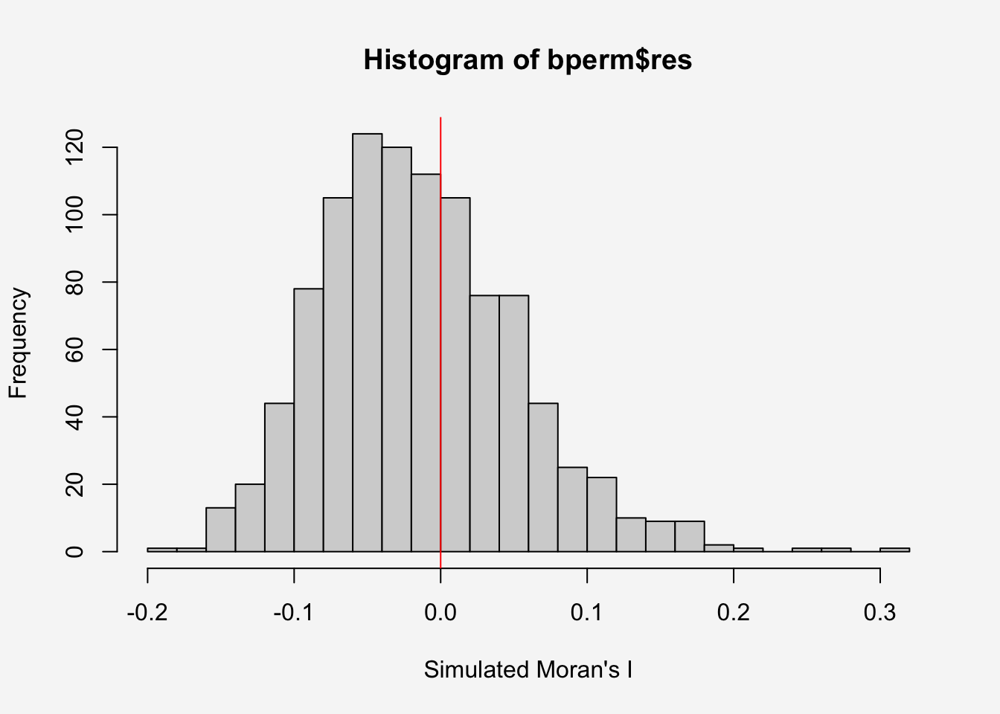
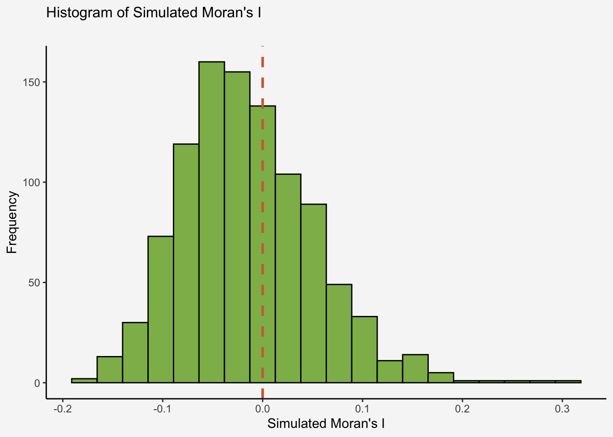
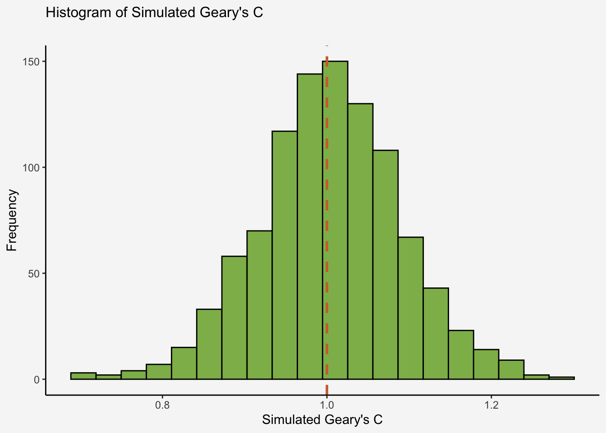
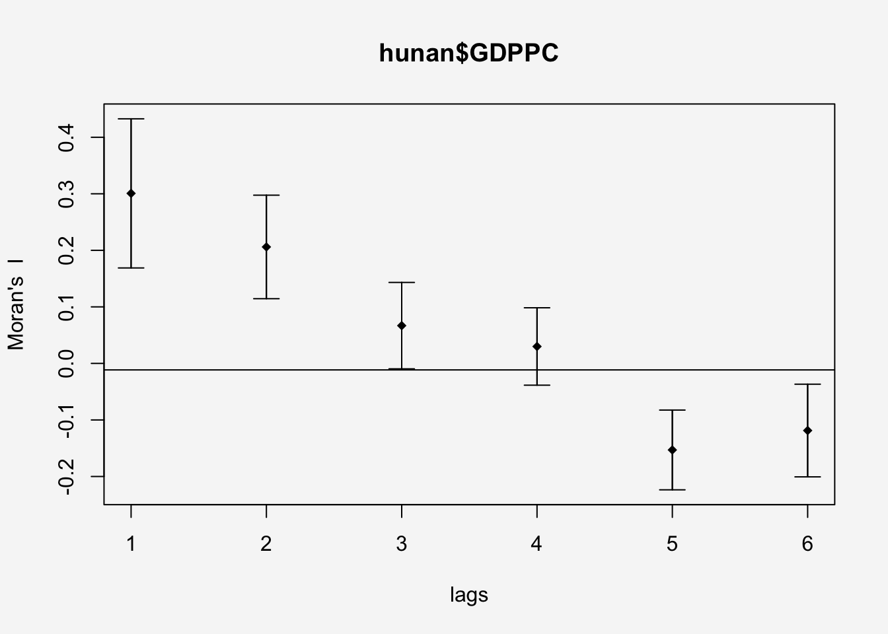
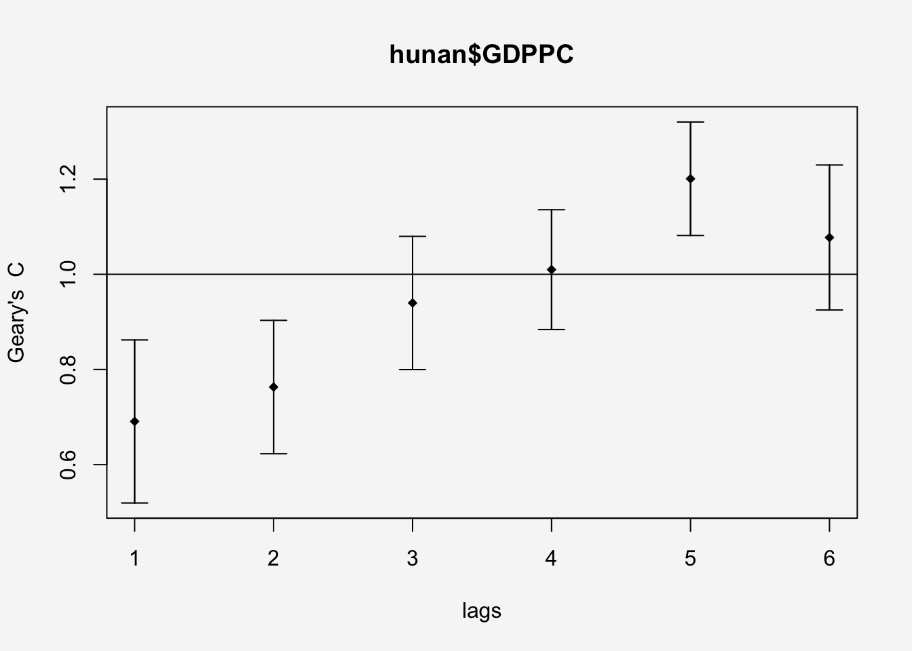

pacman::p_load(sf, tmap, tidyverse,knitr,spdep,ggplot2)Hands-on 5.a: Global Measures of Spatial Autocorrelation
1 Overview
In this hands-on exercise, we will learn how to compute Global Measures of Spatial Autocorrelation (GMSA) by using spdep package. By the end to this hands-on exercise, you will be able to:
import geospatial data using appropriate function(s) of sf package,
import csv file using appropriate function of readr package,
perform relational join using appropriate join function of dplyr package,
compute Global Spatial Autocorrelation (GSA) statistics by using appropriate functions of spdep package,
plot Moran scatterplot,
compute and plot spatial correlogram using appropriate function of spdep package.
provide statistically correct interpretation of GSA statistics.
2 Getting Started
2.1 The analytical question
In spatial policy, one of the main development objective of the local government and planners is to ensure equal distribution of development in the province. Our task in this study, hence, is to apply appropriate spatial statistical methods to discover if development are even distributed geographically. If the answer is No. Then, our next question will be “is there sign of spatial clustering?”. And, if the answer for this question is yes, then our next question will be “where are these clusters?”
In this case study, we are interested to examine the spatial pattern of a selected development indicator (i.e. GDP per capita) of Hunan Provice, People Republic of China.
2.2 Setting the Analytical Toolls
| Library | Desc |
|---|---|
| sf | handling geospatial data |
| tmap | visualization for geospatial data |
| tidyverse | handling data including packages readr, tidyr and dplyr |
| knitr | generate elegant, flexible, and fast dynamic report |
| spdep | create spatial weights matrix objects from polygon contiguities |
2.3 Getting the Data Into R Environment
In this section, we will learn how to bring a geospatial data and its associated attribute table into R environment. The geospatial data is in ESRI shapefile format and the attribute table is in csv fomat.
2.3.1 Import shapefile
The code chunk below uses st_read() of sf package to import Hunan shapefile into R. The imported shapefile will be simple features Object of sf.
hunan <- st_read(dsn = "data/geospatial",
layer = "Hunan") %>%
st_transform(crs = 32650)Reading layer `Hunan' from data source
`/Users/johsuan/johsuanh/ISSS626-GAA/Hands-on/Hands-on-Ex05/data/geospatial'
using driver `ESRI Shapefile'
Simple feature collection with 88 features and 7 fields
Geometry type: POLYGON
Dimension: XY
Bounding box: xmin: 108.7831 ymin: 24.6342 xmax: 114.2544 ymax: 30.12812
Geodetic CRS: WGS 84After importing the shape file, let’s plot the graph:
par(bg="#f6f6f6")
plot(hunan)
2.3.2 Import CSV File
Next, we will import Hunan_2012.csv into R by using read_csv() of readr package. The output is R dataframe class.
hunan2012 <- read_csv("data/aspatial/Hunan_2012.csv")kable(head(hunan2012))| County | City | avg_wage | deposite | FAI | Gov_Rev | Gov_Exp | GDP | GDPPC | GIO | Loan | NIPCR | Bed | Emp | EmpR | EmpRT | Pri_Stu | Sec_Stu | Household | Household_R | NOIP | Pop_R | RSCG | Pop_T | Agri | Service | Disp_Inc | RORP | ROREmp |
|---|---|---|---|---|---|---|---|---|---|---|---|---|---|---|---|---|---|---|---|---|---|---|---|---|---|---|---|---|
| Anhua | Yiyang | 30544 | 10967.0 | 6831.7 | 456.72 | 2703.0 | 13225.0 | 14567 | 9276.9 | 3954.9 | 3528.3 | 2718 | 494.31 | 441.4 | 338.0 | 54.175 | 32.830 | 290.4 | 234.5 | 101 | 670.3 | 5760.60 | 910.8 | 4942.253 | 5414.5 | 12373 | 0.7359464 | 0.8929619 |
| Anren | Chenzhou | 28058 | 4598.9 | 6386.1 | 220.57 | 1454.7 | 4941.2 | 12761 | 4189.2 | 2555.3 | 3271.8 | 970 | 290.82 | 255.4 | 99.4 | 33.171 | 17.505 | 104.6 | 121.9 | 34 | 243.2 | 2386.40 | 388.7 | 2357.764 | 3814.1 | 16072 | 0.6256753 | 0.8782065 |
| Anxiang | Changde | 31935 | 5517.2 | 3541.0 | 243.64 | 1779.5 | 12482.0 | 23667 | 5108.9 | 2806.9 | 7693.7 | 1931 | 336.39 | 270.5 | 205.9 | 19.584 | 17.819 | 148.1 | 135.4 | 53 | 346.0 | 3957.90 | 528.3 | 4524.410 | 14100.0 | 16610 | 0.6549309 | 0.8041262 |
| Baojing | Hunan West | 30843 | 2250.0 | 1005.4 | 192.59 | 1379.1 | 4087.9 | 14563 | 3623.5 | 1253.7 | 4191.3 | 927 | 195.17 | 145.6 | 116.4 | 19.249 | 11.831 | 73.2 | 69.9 | 18 | 184.1 | 768.04 | 281.3 | 1118.561 | 541.8 | 13455 | 0.6544614 | 0.7460163 |
| Chaling | Zhuzhou | 31251 | 8241.4 | 6508.4 | 620.19 | 1947.0 | 11585.0 | 20078 | 9157.7 | 4287.4 | 3887.7 | 1449 | 330.29 | 299.0 | 154.0 | 33.906 | 20.548 | 148.7 | 139.4 | 106 | 301.6 | 4009.50 | 578.4 | 3793.550 | 5444.0 | 20461 | 0.5214385 | 0.9052651 |
| Changning | Hengyang | 28518 | 10860.0 | 7920.0 | 769.86 | 2631.6 | 19886.0 | 24418 | 37392.0 | 4242.8 | 9528.0 | 3605 | 548.61 | 415.1 | 273.7 | 81.831 | 44.485 | 211.2 | 211.7 | 115 | 448.2 | 5220.40 | 816.3 | 6430.782 | 13074.6 | 20868 | 0.5490628 | 0.7566395 |
2.3.3 Perform Relational Join
The code chunk below will be used to update the attribute table of hunan’s SpatialPolygonsDataFrame with the attribute fields of hunan2012 dataframe. This is performed by using left_join() of dplyr package.
After performing a left join, we remove unnecessary columns and retain only ‘NAME_2’, ‘ID_3’, ‘NAME_3’, ‘ENGTYPE_3’, ‘County’, and ‘GDPPC’ for further analysis.
hunan <- left_join(hunan,hunan2012,
by = "County") %>%
select(1:4, 7, 15)
kable(head(hunan,5))| NAME_2 | ID_3 | NAME_3 | ENGTYPE_3 | County | GDPPC | geometry |
|---|---|---|---|---|---|---|
| Changde | 21098 | Anxiang | County | Anxiang | 23667 | POLYGON ((22320.48 3301894,… |
| Changde | 21100 | Hanshou | County | Hanshou | 20981 | POLYGON ((35522.96 3230355,… |
| Changde | 21101 | Jinshi | County City | Jinshi | 34592 | POLYGON ((5120.127 3285521,… |
| Changde | 21102 | Li | County | Li | 24473 | POLYGON ((-43433.9 3326204,… |
| Changde | 21103 | Linli | County | Linli | 25554 | POLYGON ((-19307.27 3304609… |
class(hunan)[1] "sf" "data.frame"3 Visualize Regional Development Indicator
Now, we are going to prepare a basemap and a choropleth map showing the distribution of GDP Per Capita (GDPPC) 2012 by using tmap package:
equal <- tm_shape(hunan) +
tm_polygons(fill = "GDPPC",
fill.scale = tm_scale_intervals(
style = "equal",
n = 5,
values = "brewer.blues")) +
tm_text("NAME_3", size=0.6)+
tm_title("Equal interval classification",
position = tm_pos_out("center", "top", "center")) +
tm_layout(
legend.position = c("left", "bottom"),
bg.color = "#f6f6f6",
frame = FALSE)
quantile <- tm_shape(hunan) +
tm_polygons(fill = "GDPPC",
fill.scale = tm_scale_intervals(
style = "quantile",
n = 5,
values = "brewer.blues")) +
tm_text("NAME_3", size=0.6)+
tm_title("Quantile classification",
position = tm_pos_out("center", "top", "center")) +
tm_layout(
legend.position = c("left", "bottom"),
bg.color = "#f6f6f6",
frame = FALSE)
tmap_arrange(equal,
quantile,
asp=1,
ncol=2)
4 Global Measures of Spatial Autocorrelation
In this section, we will learn how to compute global spatial autocorrelation statistics and to perform spatial complete randomness test for global spatial autocorrelation.
4.1 Computing Contiguity Spatial Weights
Before we can compute the global spatial autocorrelation statistics, we need to construct a spatial weights of the study area. The spatial weights is used to define the neighbourhood relationships between the geographical units (i.e. county) in the study area.
In the code chunk below, poly2nb() of spdep package is used to compute contiguity weight matrices for the study area. This function builds a neighbours list based on regions with contiguous boundaries. If you look at the documentation you will see that you can pass a “queen” argument that takes TRUE or FALSE as options. If you do not specify this argument the default is set to TRUE, that is, if you don’t specify queen = FALSE this function will return a list of first order neighbours using the Queen criteria.
More specifically, the code chunk below is used to compute Queen contiguity weight matrix.
wm_q <- poly2nb(hunan,queen=TRUE)
summary(wm_q)Neighbour list object:
Number of regions: 88
Number of nonzero links: 448
Percentage nonzero weights: 5.785124
Average number of links: 5.090909
Link number distribution:
1 2 3 4 5 6 7 8 9 11
2 2 12 16 24 14 11 4 2 1
2 least connected regions:
30 65 with 1 link
1 most connected region:
85 with 11 links
How to read the result?
The summary report above shows that:
- There are total 88 area units/conties in Hunan.
- Across all units, there are 448 total neighbor connections, where one region is considered a neighbor of another.
- Only around 5.8% (448 / (88*88) ) of all possible region-to-region connections are considered neighbors
- On average, each region has around 5 neighbors (448/88) under Queen contiguity.
- The Link number distribution says 2 regions (Region 30 & 65) has only 1 neighbor, 2 regions has 2 neighbors,..,1 region (Region 85) has 11 neighbors
4.2 Row-standardised Weights Matrix
Next, we need to assign weights to each neighboring polygon. By doing this, we can measure “influence” of neighboring regions.
In our case, each neighboring polygon will be assigned equal weight (style=“W”). This is accomplished by assigning the fraction: 1/n to each neighboring county then summing the weighted income values. While the method is simple and intuitive, the drawback is that boundary regions have fewer neighbors, so their lagged values might be biased, thus potentially over- or under-estimating the true nature of the spatial autocorrelation in the data
Other robust method includes Binary weights (style="B") - Each neighbor just gets 1, non-neighbors get 0.
rswm_q <- nb2listw(wm_q, style="W", zero.policy = TRUE)
rswm_qCharacteristics of weights list object:
Neighbour list object:
Number of regions: 88
Number of nonzero links: 448
Percentage nonzero weights: 5.785124
Average number of links: 5.090909
Weights style: W
Weights constants summary:
n nn S0 S1 S2
W 88 7744 88 37.86334 365.9147The input of
nb2listw()must be an object of class nb. The syntax of the function has two major arguments, namely style and zero.poly.The zero.policy=TRUE option allows for lists of non-neighbors. R will allow observations with no neighbors, treating them as having weights = 0. If FALSE(the default), R will throw an error if any observation has no neighbors.
style can take values “W”, “B”, “C”, “U”, “minmax” and “S”. B is the basic binary coding, W is row standardised (sums over all links to n), C is globally standardised (sums over all links to n), U is equal to C divided by the number of neighbours (sums over all links to unity), while S is the variance-stabilizing coding scheme proposed by Tiefelsdorf et al. 1999, p. 167-168 (sums over all links to n)
How to read the result?
- n: Number of observations (regions/polygons). Here, 88 regions/polygons.
- nn: Total number of neighbor pairs. Together, these polygons have 7744 neighbor connections.
- S0: Sum of all weights in the matrix. The weights are row-standardized (
W), so each row sums to 1 →S0 = 88 - S1: Sum of squared weights
- S2: Sum of squared sums of weights per row
- S1 and S2 are internal numbers used for calculating variance and significance in Moran’s I or Geary’s C.
5 Global Measures of Spatial Autocorrelation: Moran’s I
In this section, we will learn how to perform Moran’s I statistics testing by using moran.test()of spdep.
Moran’s I quantifies the degree to which a variable at one location is similar to values at nearby locations. It measures global correlation, sensitive to overall clustering:
| Global Moran’s I Value | Meaning |
|---|---|
| I > 0 | Positive spatial autocorrelation (similar values cluster together) |
| I ≈ 0 | No spatial autocorrelation (random distribution) |
| I < 0 | Negative spatial autocorrelation (neighbors are dissimilar, dispersed pattern) |
Typical range is between –1 (perfect dispersion) and +1 (perfect clustering), though in practice the bounds depend on the weight matrix.
The arguments of moran.test() include:
| Argument | Description |
|---|---|
| randomisation | variance of I calculated under the assumption of randomisation, if FALSE normality |
| zero.policy | if attribute not set, use global option value; if TRUE assign zero to the lagged value of zones without neighbours, if FALSE assign NA |
| alternative | the alternative hypothesis, must be one of greater (default), less or two.sided. |
5.1 Maron’s I test
- H0: GDP per capita values are randomly distributed across spatial units
- H1: GDP per capita values show positive spatial autocorrelation
- Significance level: α = 0.05
moran.test(hunan$GDPPC,
listw=rswm_q,
zero.policy = TRUE,
na.action=na.omit)
Moran I test under randomisation
data: hunan$GDPPC
weights: rswm_q
Moran I statistic standard deviate = 4.7351, p-value = 1.095e-06
alternative hypothesis: greater
sample estimates:
Moran I statistic Expectation Variance
0.300749970 -0.011494253 0.004348351
Result Interpretation
The Observed I (0.3007) > Expected I (–0.0115) indicates stronger positive spatial autocorrelation than expected by chance. The p-value is less than 5%, which leads us to reject the null hypothesis of spatial randomness, suggesting significant positive spatial autocorrelation in GDP per capita across the Hunan regions. The areas with high GDP per capita tend to be near other high GDP per capita areas, and areas with low GDP per capita cluster together as well.
5.2 Computing Monte Carlo Moran’s I
The code chunk below performs permutation test for Moran’s I statistic by using moran.mc() of spdep. A total of 1000 simulation will be performed:
- H0: GDP per capita values are randomly distributed across spatial units
- H1: GDP per capita values show positive spatial autocorrelation
set.seed(1234)
bperm <- moran.mc(hunan$GDPPC,
listw=rswm_q,
nsim=999,
zero.policy = TRUE,
na.action=na.omit)
bperm
Monte-Carlo simulation of Moran I
data: hunan$GDPPC
weights: rswm_q
number of simulations + 1: 1000
statistic = 0.30075, observed rank = 1000, p-value = 0.001
alternative hypothesis: greater
Result Interpretation
The permutation test with 999 simulations yielded a Moran’s I of 0.301 (p = 0.001), confirming the earlier finding of highly significant positive spatial autocorrelation in GDP per capita across Hunan.
5.3 Visualising Monte Carlo Moran’s I
It is always a good practice for us the examine the simulated Moran’s I test statistics in greater detail. This can be achieved by plotting the distribution of the statistical values as a histogram by using the code chunk below.
In the code chunk below hist() and abline() of R Graphics are used.
First, we check the mean value of 999 simulation test:
mean(bperm$res[1:999])[1] -0.01504572var(bperm$res[1:999])[1] 0.004371574summary(bperm$res[1:999]) Min. 1st Qu. Median Mean 3rd Qu. Max.
-0.18339 -0.06168 -0.02125 -0.01505 0.02611 0.27593 par(bg="#f6f6f6")
hist(bperm$res,
freq=TRUE,
breaks=20,
xlab="Simulated Moran's I")
abline(v=0,
col="red") 
This mean under the null hypothesis of spatial randomness, the average Moran’s I across the permutations is roughly –0.015, which is close to 0 (no spatial autocorrelation).
5.4 Challenge: Visualising Monte Carlo Moran’s I using ggplot2
First, we need to convert the Moran’s I simulation results into a data frame:
morani_res <- data.frame(MoranI = bperm$res)Next, we use geom_histogram() plot the histogram and use geom_vline() to mark mean at 0
ggplot(morani_res , aes(x = MoranI)) +
geom_histogram(bins = 20, fill = "#8EB859", color = "black") +
geom_vline(xintercept = 0, color = "#CE6E3F", linetype = "dashed", size = 1) +
labs(
x = "Simulated Moran's I",
y = "Frequency",
title = "Histogram of Simulated Moran's I",
subtitle = ""
) +
theme_classic()+
theme(plot.title = element_text(size = 12),
plot.background = element_rect(fill = "#f6f6f6",color = NA),
panel.background = element_rect(fill = "#f6f6f6"))
6 Global Measures of Spatial Autocorrelation: Geary’s C
In this section, we will learn how to perform Geary’s C statistics testing by using appropriate functions of spdep package.
Geary’s C measures local dissimilarity between neighboring spatial units rather than overall similarity. While Moran’s I looks at global correlation (overall clustering of similar values), Geary’s C is more sensitive to differences between neighbors.
| Geary’s C Value | Meaning |
|---|---|
| C < 1 | Positive spatial autocorrelation (neighbors are similar) |
| C ≈ 1 | No spatial autocorrelation (random distribution) |
| C > 1 | Negative spatial autocorrelation (neighbors are dissimilar) |
Important
Note: This is opposite from Moran’s I, where positive autocorrelation gives I > 0.
6.1 Geary’s C test
- H0: There is no spatial autocorrelation. Neighboring values are as dissimilar as expected by chance (C=1)
- H1: There is spatial autocorrelation, meaning neighboring values are more similar than expected (C<1)
- Significance level: α = 0.05
The code chunk below performs Geary’s C test for spatial autocorrelation by using geary.test() of spdep:
geary.test(hunan$GDPPC, listw=rswm_q)
Geary C test under randomisation
data: hunan$GDPPC
weights: rswm_q
Geary C statistic standard deviate = 3.6108, p-value = 0.0001526
alternative hypothesis: Expectation greater than statistic
sample estimates:
Geary C statistic Expectation Variance
0.6907223 1.0000000 0.0073364
Result Interpretation
A Geary’s C statistic less than 1, with a p-value below 0.05, indicates significant positive spatial autocorrelation, leading us to reject the null hypothesis. This suggests that neighboring regions tend to have similar GDP per capita, confirming spatial clustering.
6.2 Computing Monte Carlo Geary’s C
- H0: There is no spatial autocorrelation. Neighboring values are as dissimilar as expected by chance (C=1)
- H1: There is spatial autocorrelation, meaning neighboring values are more similar than expected (C<1)
- Significance level: 0.001
The code chunk below performs permutation test for Geary’s C statistic by using geary.mc()of spdep.
set.seed(1234)
bperm2 <- geary.mc(hunan$GDPPC,
listw=rswm_q,
nsim=999)
bperm
Monte-Carlo simulation of Moran I
data: hunan$GDPPC
weights: rswm_q
number of simulations + 1: 1000
statistic = 0.30075, observed rank = 1000, p-value = 0.001
alternative hypothesis: greater
Result Interpretation
There is strong positive spatial autocorrelation in GDP per capita across Hunan. Regions with high GDP per capita cluster with other high-GDP regions, and low-GDP regions cluster with other low-GDP regions.
6.3 Visualising the Monte Carlo Geary’s C
Next, we will plot a histogram to reveal the distribution of the simulated values by using the code chunk below.
mean(bperm2$res[1:999])[1] 1.004402var(bperm2$res[1:999])[1] 0.007436493summary(bperm2$res[1:999]) Min. 1st Qu. Median Mean 3rd Qu. Max.
0.7142 0.9502 1.0052 1.0044 1.0595 1.2722 Gearyc_res <- data.frame(GearyC = bperm2$res)ggplot(Gearyc_res , aes(x = GearyC)) +
geom_histogram(bins = 20, fill = "#8EB859", color = "black") +
geom_vline(xintercept = 1, color = "#CE6E3F", linetype = "dashed", size = 1) +
labs(
x = "Simulated Geary's C",
y = "Frequency",
title = "Histogram of Simulated Geary's C",
subtitle = ""
) +
theme_classic()+
theme(plot.title = element_text(size = 12),
plot.background = element_rect(fill = "#f6f6f6",color = NA),
panel.background = element_rect(fill = "#f6f6f6"))
This mean under the null hypothesis of spatial randomness, the average Geary’s C across the permutations is roughly 1.00402, which is close to 1 (no spatial autocorrelation).
7 Spatial Correlogram
Spatial correlograms are great to examine patterns of spatial autocorrelation in your data or model residuals. They show how correlated are pairs of spatial observations when you increase the distance (lag) between them - they are plots of some index of autocorrelation (Moran’s I or Geary’s c) against distance.
Although correlograms are not as fundamental as variograms (a keystone concept of geostatistics), they are very useful as an exploratory and descriptive tool. For this purpose they actually provide richer information than variograms.
7.1 Compute Moran’s I correlogram
In the code chunk below, sp.correlogram() of spdep package is used to compute a 6-lag spatial correlogram of GDPPC. The global spatial autocorrelation used in Moran’s I. The plot() of base Graph is then used to plot the output.
par(bg="#f6f6f6")
MI_corr <- sp.correlogram(wm_q,
hunan$GDPPC,
order=6,
method="I",
style="W")
plot(MI_corr)
By plotting the output might not allow us to provide complete interpretation. This is because not all autocorrelation values are statistically significant. Hence, it is important for us to examine the full analysis report by printing out the analysis results as in the code chunk below.
print(MI_corr)Spatial correlogram for hunan$GDPPC
method: Moran's I
estimate expectation variance standard deviate Pr(I) two sided
1 (88) 0.3007500 -0.0114943 0.0043484 4.7351 2.189e-06 ***
2 (88) 0.2060084 -0.0114943 0.0020962 4.7505 2.029e-06 ***
3 (88) 0.0668273 -0.0114943 0.0014602 2.0496 0.040400 *
4 (88) 0.0299470 -0.0114943 0.0011717 1.2107 0.226015
5 (88) -0.1530471 -0.0114943 0.0012440 -4.0134 5.984e-05 ***
6 (88) -0.1187070 -0.0114943 0.0016791 -2.6164 0.008886 **
---
Signif. codes: 0 '***' 0.001 '**' 0.01 '*' 0.05 '.' 0.1 ' ' 1
Result Interpretation
The Moran’s I spatial correlogram shows:
- Lags 1–3: Moran’s I values range from 0.067 to 0.301 with p-values < 0.05, indicating significant positive spatial autocorrelation among neighboring regions at these distances.
- Lag 4: Moran’s I is 0.03 with a p-value > 0.05, suggesting that the spatial pattern at this distance is essentially random.
- Lags 5–6: Moran’s I values are negative with p-values < 0.05, indicating that regions five to six steps apart tend to have dissimilar GDP per capita.
7.2 Compute Geary’s C correlogram
In the code chunk below, sp.correlogram() of spdep package is used to compute a 6-lag spatial correlogram of GDPPC. The global spatial autocorrelation used in Geary’s C. The plot() of base Graph is then used to plot the output.
par(bg="#f6f6f6")
GC_corr <- sp.correlogram(wm_q,
hunan$GDPPC,
order=6,
method="C",
style="W")
plot(GC_corr)
Similar to the previous step, we will print out the analysis report by using the code chunk below.
print(GC_corr)Spatial correlogram for hunan$GDPPC
method: Geary's C
estimate expectation variance standard deviate Pr(I) two sided
1 (88) 0.6907223 1.0000000 0.0073364 -3.6108 0.0003052 ***
2 (88) 0.7630197 1.0000000 0.0049126 -3.3811 0.0007220 ***
3 (88) 0.9397299 1.0000000 0.0049005 -0.8610 0.3892612
4 (88) 1.0098462 1.0000000 0.0039631 0.1564 0.8757128
5 (88) 1.2008204 1.0000000 0.0035568 3.3673 0.0007592 ***
6 (88) 1.0773386 1.0000000 0.0058042 1.0151 0.3100407
---
Signif. codes: 0 '***' 0.001 '**' 0.01 '*' 0.05 '.' 0.1 ' ' 1
Result Interpretation
The Geary’s C spatial correlogram shows:
- Lags 1–2: Geary’s C values range from 0.69 to 0.76 with p-values < 0.05, indicating significant positive spatial autocorrelation among neighboring regions at these distances.
- Lag 3-4: Geary’s C values range from 0.93 to 1.01 with p-values > 0.05, suggesting that the spatial pattern at this distance is essentially random.
- Lags 5: Geary’s C values > 1 with p-values < 0.05, indicating that regions five steps apart tend to have dissimilar GDP per capita.
- Lags 6: Geary’s C values > 1 with p-values > 0.05, suggesting that the spatial pattern at this distance is essentially random.
8 Reference
- Kam, T.S. (2025). Global Measures of Spatial Autocorrelation